縦書き html/PDF/EPUB/mobi 置き場
縦書き html、PDF、EPUB、mobi の置き場です。主に自分用です（組版好きなので）。
名義について
- 頭おかしい人の別名義です。
- かなり異端で不謹慎な話しか書いてないのと、そもそもグレーな活動なので、ただのエキストラ的な感じでやっています。名乗るほどの者ではありません。
- ただし、ヘタレすぎて自分から言い出せないだけで、別に秘密にしているわけではまったくないです。言及いただいてまったくかまいませんし、呼ばれれば答えます。まあ、ここをご覧になっている時点で、もうバレているのだと思いますが。
- 何かあれば pixiv DM、ハーメルンか Twitter へご連絡ください。
- 名前には何の意味もなく、面倒なので決めてないだけです。ハーメルンは 1 文字だとダメなのでしょうがなく 2 文字にしました。いい名前を思いついたら変えるかも。
内容について
- 公式とは一切関係ありません。
- この手の活動について非常に疎いため、もし非常識なことをしてしまっていたら申し訳ありません。
- 同じ内容が pixiv とハーメルンにもあります。
- 内容説明やネタバレ等の注意書きは pixiv のキャプションやハーメルンのあらすじ、前書き、後書きをご覧下さい。
- この手の活動に対する、ある種の実験として始めました。質や面白さよりも「とにかく書き上げる」ことを目標にしています（言い訳）。
- オリ設定、オリキャラ、オリ展開、内輪ネタ多めなので苦手な方はご注意ください。キャラもしばしば原形を留めていません。
- 書きたいものを書いてます。読者のことまで頭が回ってません。すいません。
- 俺得でしかないので完全壁打ち活動ですが、だからこそ逆に反応あると (たとえネガティブなものでも) めちゃくちゃうれしいです。感想は随時募集中。
一覧（随時更新）
Kindle for iOS では、EPUB、mobi、PDF がまともに読めませんのでご注意下さい（ルビが使えない等）。
Vivliostyle Viewer ではフォントサイズや見開き／単ページの選択ができます。
『2027年7月2日20時57分24秒』 (2022/9/20)
pixiv / ハーメルン /
html /
PDF /
Vivliostyle Viewer /
EPUB /
mobi
『アンサー』 (2022/10/10)
pixiv / ハーメルン /
html /
PDF /
Vivliostyle Viewer /
EPUB /
mobi
『一条さん』 (2023/1/2)
pixiv / ハーメルン /
html /
PDF /
Vivliostyle Viewer /
EPUB /
mobi
『ERROR』 (2023/1/23)
pixiv / ハーメルン /
html /
PDF /
Vivliostyle Viewer /
EPUB /
mobi
『後ろ結び』 (2023/5/8)
pixiv / ハーメルン /
html /
PDF /
Vivliostyle Viewer /
EPUB /
mobi
『クローゼットの鍵を開けてよ』 (2023/7/29)
pixiv / ハーメルン /
html /
PDF /
Vivliostyle Viewer /
EPUB /
mobi
『エキセントリシティ』 (2023/9/20)
pixiv / ハーメルン /
html /
PDF /
Vivliostyle Viewer /
EPUB /
mobi
『こたえのかわりに、曲をかける』 (2023/10/30)
pixiv / ハーメルン /
html /
PDF /
Vivliostyle Viewer /
EPUB /
mobi
フォーマットについて
組版
- 以下の環境で typeset しています。2022 年に TATEditor から試験的に乗り換えました。
html
- ブラウザで普通に電子書籍並の縦書き表示ができてうれしいです。
- Firefox では縦中横が表示されません。
- エア草紙（Web 版）で読み込ませると、ブラウザとフォントの組み合わせによっては表記がおかしいです。
- Firefox: 長音記号が表示されない。ダブルミニュートが縦組でない（横組グリフ横転）。
- Chrome for MacOS: ダブルミニュートが縦組でない（横組グリフ横転）。
- Safari for MacOS: 長音記号とダブルミニュートが縦組でない（横書きグリフ横転）。
- Chrome for iOS: 長音記号が縦組でない（横書きグリフ横転）。
- Safari for iOS: 長音記号が縦組でない（横書きグリフ横転）。
左から順に、Chrome for iOS で表示した html とエア草紙。
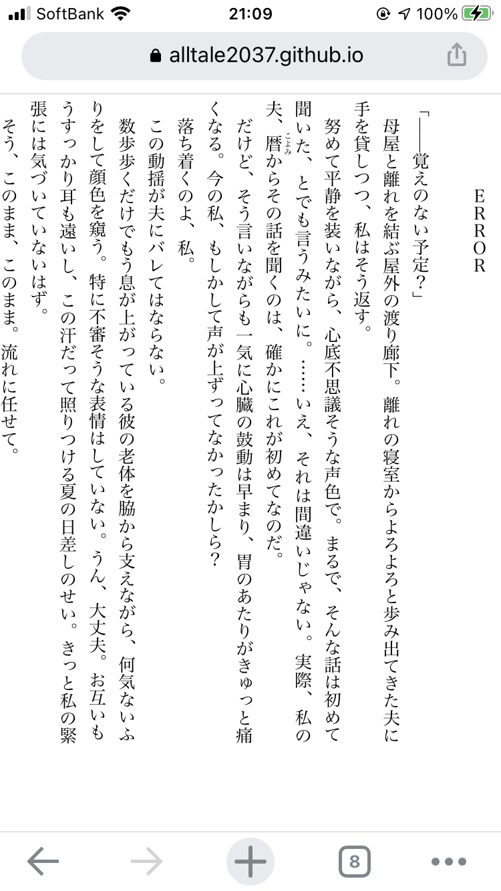
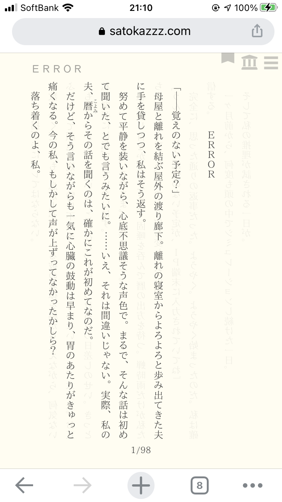
EPUB
- EPUB は以下の環境で動作確認しています。Google Books、Kindle for iOS/Mac および読書尚友では正しく表示できません。
- ○ Apple Books (iOS, MacOS)
- ○ honto (iOS)
- ○ 楽天 kobo (iOS, Android, MacOS)
- ○ BOOK☆WALKER (iOS、MacOS)
- ○ Kinoppy (iOS, Android, MacOS)
- ✕ Kindle (iOS, MacOS): 横書きになる、ルビが正しく表示されない
- ○ Kindle (Android)
- ○ Bibi (WebUI)
- ○ EPUBReader (Firefox Addon)
- ○ Sigli (MacOS)
- ○ Calibre (MacOS)
- ○ Vivliostyle Viewer (WebUI)
- △ Adobe Digital Editions (MacOS): 横書きになる（EPUB のせいかも）
- △ Thorium (MacOS): 時々表示が崩れる
- ✕ ConTenDo ビューア: ルビ、ダーシなどが正しく表示されない
- △ Google Books (Android): 縦中横が正しく表示されない、ダーシがセンタリングされていない
- ✕ Google Books (WebUI): 2 ページ目以降が表示されない
- △ Perfect Viewer (Android): フォントによっては一部の約物（全角「：」等）が横書きになる（Noto Serif 等）
- ✕ エア草紙 (MacOS): 行頭以外の全角空白が無視されることがある。二重山括弧が強制的にルビになってしまうことがある。ダブルミニュートが縦書きグリフを参照していない（横書きグリフを90度回転しただけ）。
- ✕ 読書尚友 (iOS): 空行、全角空白が無視される
- ✕ 読書尚友 Lite (Android): 空行が無視される。ダーシ、三点リーダ等の表示がおかしい
- 個人的には楽天 Kobo での見た目が好きです。
iOS での表示。左から Apple Books, honto, kobo, BOOK☆WALKER, Kinoppy です。
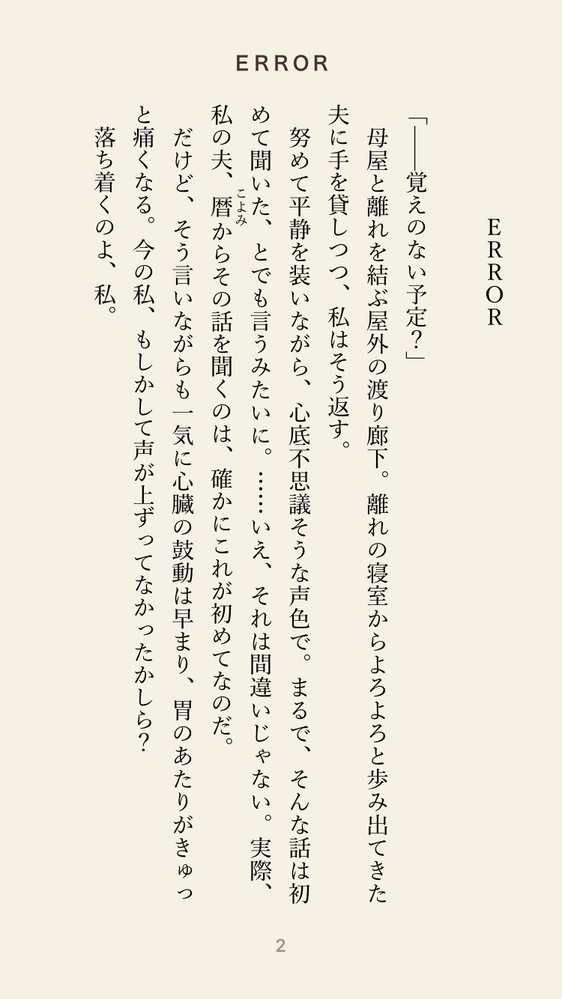
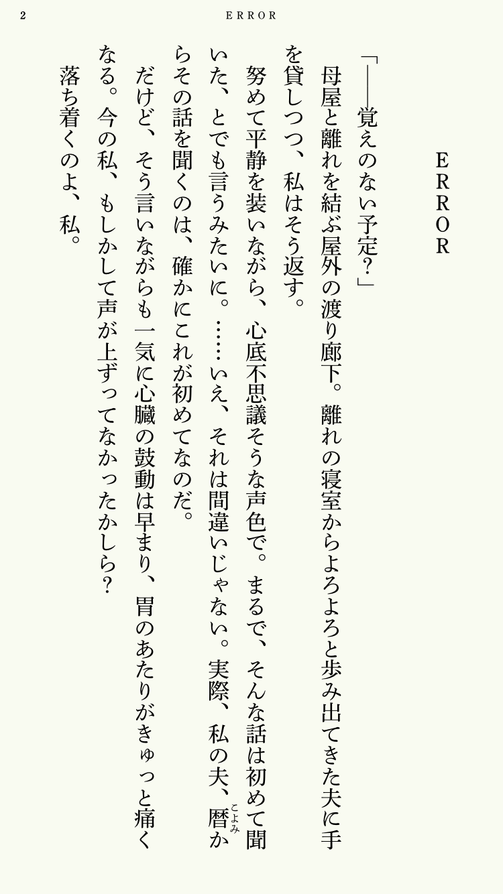
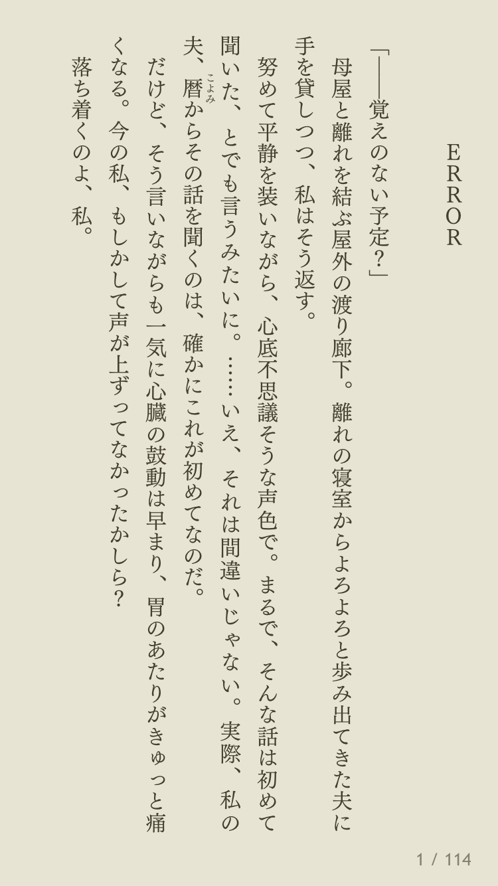
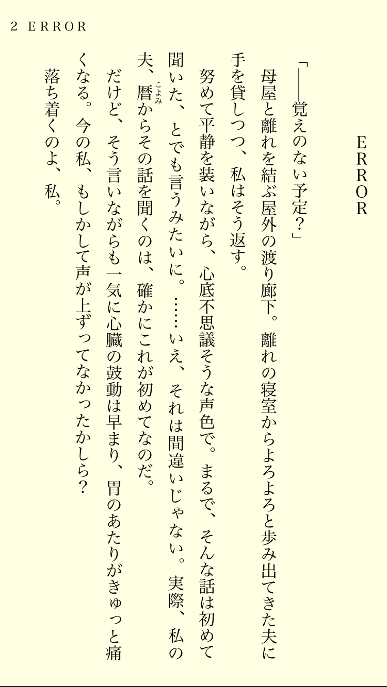
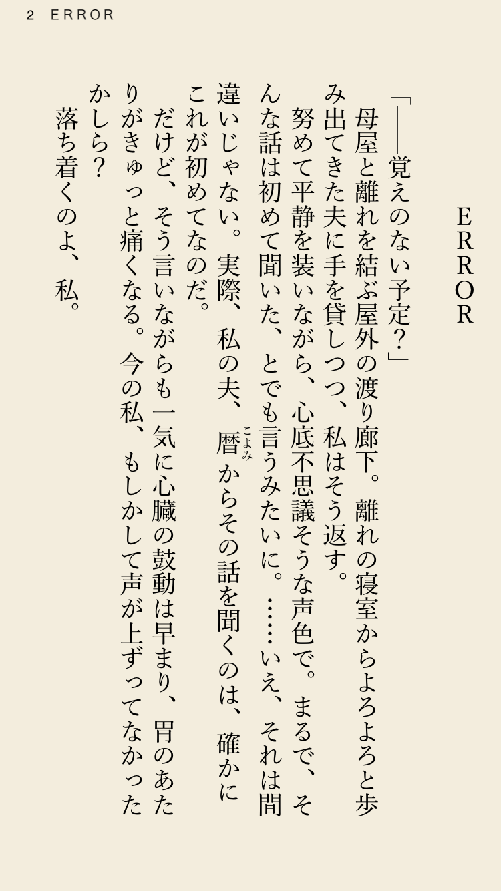
Android (Pixel 4a) での表示。左から kobo, Kinoppy, kindle です。
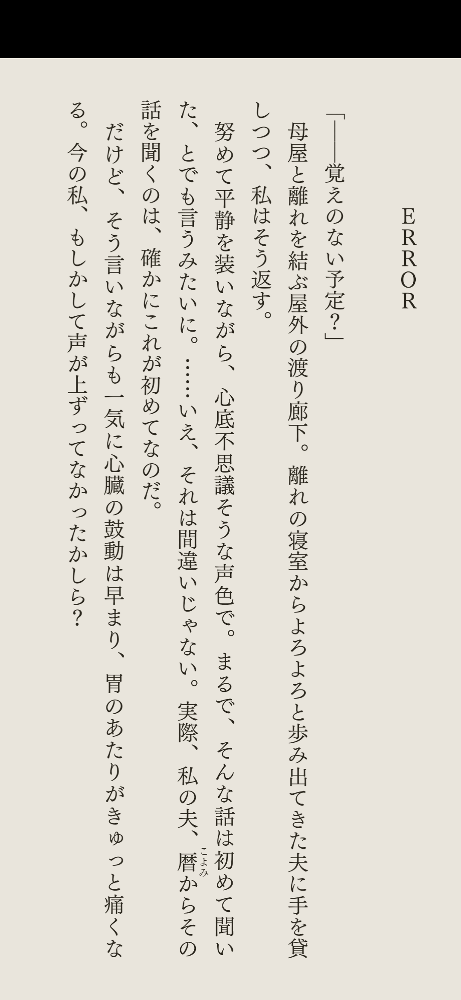
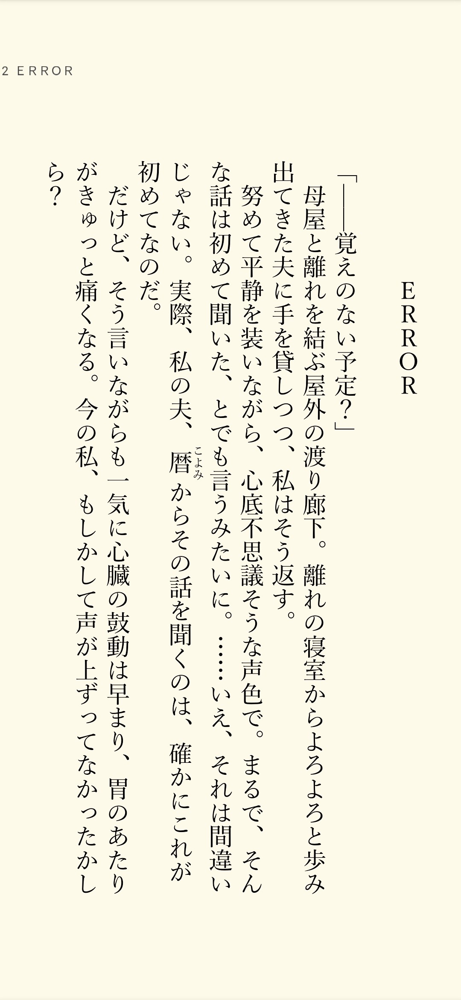
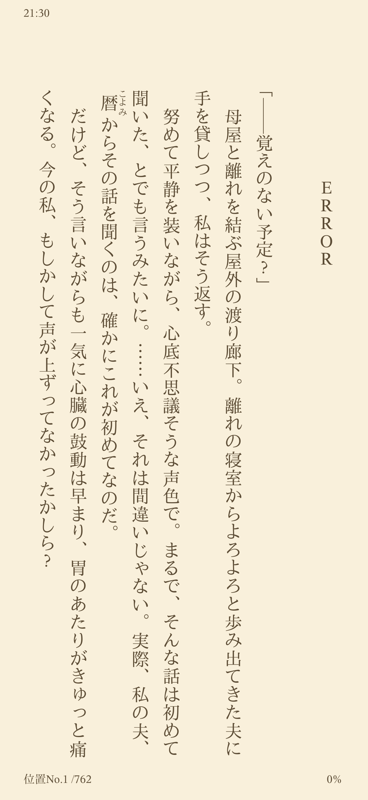
PDF
- PDF のサイズは四六判から文庫サイズ (A6) に変更しました。印刷すると少し文字が大きすぎるかもしれません。電子的閲覧向けです。
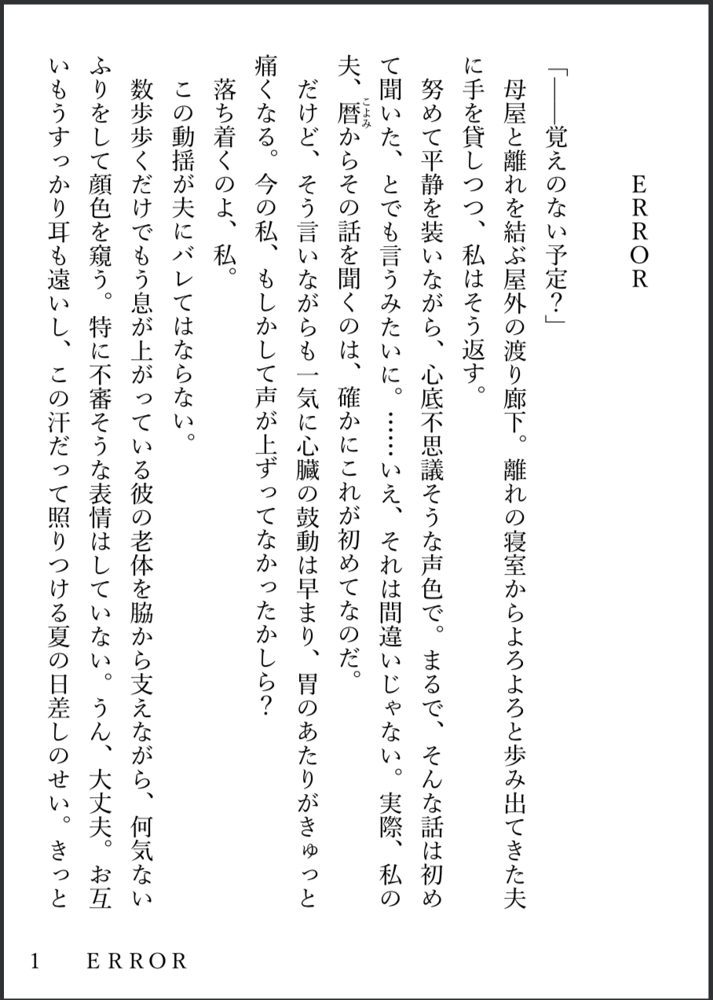
mobi
- kindlegen で作っています。Kindle の動作環境によって以下のような違いがあります。
- △ Kindle for Mac: Mac のローカル環境に mobi ファイルを置き、ダブルクリックで Kindle で開くと正常に表示されます。”Send to Kindle” を使うと Amazon 側で変換されるらしく、横書きになってしまい、ルビも表示されません。
- ✕ Kindle for iOS: ”Send to Kindle” を使うと Amazon 側で変換されるらしく、横書きになってしまい、ルビも表示されません。
- ○ Kindle for Android: 正常に表示されます。
- かつては iOS 用には、Kindle Previewer などで azk ファイルを作成すれば正しく読めたようなのですが、あいにく最近の Kindle では azk が扱えません。
参考文献